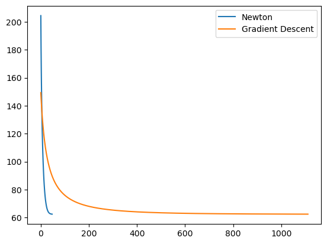

import pandas as pd
import seaborn as sns
import matplotlib.pyplot as plt
import sklearn
from sklearn.model_selection import train_test_split
import torchPreliminary Testing of Newton’s Method
%load_ext autoreload
%autoreload 2
from newton import LogisticRegression, GradientDescentOptimizer, NewtonOptimizer, AdamOptimizerdef classification_data(n_points = 300, noise = 0.2, p_dims = 2):
y = torch.arange(n_points) >= int(n_points/2)
y = 1.0*y
X = y[:, None] + torch.normal(0.0, noise, size = (n_points,p_dims))
X = torch.cat((X, torch.ones((X.shape[0], 1))), 1)
return X.double(), y.double()
X, y = classification_data(noise = 0.5)opt = NewtonOptimizer()
loss_arr = []
for _ in range(3300):
loss = opt.loss(X, y)
loss_arr.append(loss)
opt.step(X, y, alpha = 0.1)opt2 = GradientDescentOptimizer()
loss_arr2 = []
for _ in range(120):
loss = opt2.loss(X, y)
loss_arr2.append(loss)
opt2.step(X, y, alpha = 0.1, beta = 0)plt.plot(loss_arr)
plt.plot(loss_arr2)
def plot_data_and_w(X, y, w):
plt.figure(figsize=(8, 6))
plt.scatter(X[y == 0][:, 0], X[y == 0][:, 1], color='red', label='Label 0')
plt.scatter(X[y == 1][:, 0], X[y == 1][:, 1], color='blue', label='Label 1')
# Decision boundary: w0*x + w1*y + w2 = 0
x_vals = torch.linspace(X[:, 0].min(), X[:, 0].max(), 100)
if w[1] != 0:
y_vals = -(w[0] * x_vals + w[2]) / w[1]
plt.plot(x_vals, y_vals, 'k--', label='Decision Boundary')
plt.xlabel('X1')
plt.ylabel('X2')
plt.legend()
plt.grid(True)
plt.show()
plot_data_and_w(X, y, opt.w)
def plot_data_and_w(X, y, w):
plt.figure(figsize=(8, 6))
plt.scatter(X[y == 0][:, 0], X[y == 0][:, 1], color='red', label='Label 0')
plt.scatter(X[y == 1][:, 0], X[y == 1][:, 1], color='blue', label='Label 1')
# Decision boundary: w0*x + w1*y + w2 = 0
x_vals = torch.linspace(X[:, 0].min(), X[:, 0].max(), 100)
if w[1] != 0:
y_vals = -(w[0] * x_vals + w[2]) / w[1]
plt.plot(x_vals, y_vals, 'k--', label='Decision Boundary')
plt.xlabel('X1')
plt.ylabel('X2')
plt.legend()
plt.grid(True)
plt.show()
plot_data_and_w(X, y, opt2.w)
print(opt.w, opt2.w)tensor([ 1.6637, 1.3060, -0.7354], dtype=torch.float64) tensor([ 1.4493, 1.3094, -0.9240], dtype=torch.float64)Very similar w values.
Newton’s Method Experiments
It took me a long time to find a dataset that worked well for Newton’s method. Since the step function finds the inverse of the Hessian Matrix, I was running into issues where the Hessian was singular and therefore could not be inverted. I tried using pinverse to approximate the inverse, but unfortunately that slowed down the algorithm drastically.
df = pd.read_csv("/Users/ellisterling/Documents/spring25/csci0451/ellisterling.github.io/posts/newton/data/Titanic-Dataset.csv")
df.columnsIndex(['PassengerId', 'Survived', 'Pclass', 'Name', 'Sex', 'Age', 'SibSp',
'Parch', 'Ticket', 'Fare', 'Cabin', 'Embarked'],
dtype='object')filter = ["Pclass", "Sex", "Age", "SibSp", "Parch", "Fare", "Survived"]# fig, ax = plt.subplots(1, 1, figsize = (6, 4))
# hist = ax.hist(df['Location'], bins = 50, color = "steelblue", alpha = 0.6, linewidth = 1, edgecolor = "black")
# |sns.countplot(df[df["Preference"] == 0], x = "Environmental_Concerns", hue = "Preference")
# sns.scatterplot(df, x = "Proximity_to_Mountains", y = "Vacation_Budget", hue = "Preference")
sns.countplot(df, x = "Pclass", hue = "Survived")
df.groupby("Survived")["Survived"].value_counts()Survived
0 549
1 342
Name: count, dtype: int64df = df[filter]
df = df.dropna()
df = pd.get_dummies(df)
df["Survived"]0 0
1 1
2 1
3 1
4 0
..
885 0
886 0
887 1
889 1
890 0
Name: Survived, Length: 714, dtype: int64df_train, df_test = train_test_split(df, test_size = 0.2)
X_train = df_train.drop("Survived", axis=1)
y_train = df_train["Survived"]
X_test = df_test.drop("Survived", axis=1)
y_test = df_test["Survived"]X_train_tensor = torch.from_numpy(X_train.to_numpy().astype(float))
X_test_tensor = torch.from_numpy(X_test.to_numpy().astype(float))
y_train_tensor = torch.tensor(y_train.values, dtype=torch.float)
y_test_tensor = torch.tensor(y_test.values, dtype=torch.float)X_train_tensor = X_train_tensor.double()
X_train_tensor
y_train_tensor = y_train_tensor.double()
X_test_tensor = X_test_tensor.double()
y_test_tensor = y_test_tensor.double()opt3 = NewtonOptimizer()
loss_arr = []
X_train| Pclass | Age | SibSp | Parch | Fare | Sex_female | Sex_male | |
|---|---|---|---|---|---|---|---|
| 532 | 3 | 17.0 | 1 | 1 | 7.2292 | False | True |
| 338 | 3 | 45.0 | 0 | 0 | 8.0500 | False | True |
| 840 | 3 | 20.0 | 0 | 0 | 7.9250 | False | True |
| 151 | 1 | 22.0 | 1 | 0 | 66.6000 | True | False |
| 705 | 2 | 39.0 | 0 | 0 | 26.0000 | False | True |
| ... | ... | ... | ... | ... | ... | ... | ... |
| 146 | 3 | 27.0 | 0 | 0 | 7.7958 | False | True |
| 155 | 1 | 51.0 | 0 | 1 | 61.3792 | False | True |
| 285 | 3 | 33.0 | 0 | 0 | 8.6625 | False | True |
| 881 | 3 | 33.0 | 0 | 0 | 7.8958 | False | True |
| 108 | 3 | 38.0 | 0 | 0 | 7.8958 | False | True |
571 rows × 7 columns
opt3.wfor _ in range(5000):
# add other stuff to e.g. keep track of the loss over time.
loss = opt3.loss(X_train_tensor, y_train_tensor)
loss_arr.append(loss)
opt3.step(X_train_tensor, y_train_tensor, alpha = 0.25)plt.plot(torch.arange(1, len(loss_arr)+1), loss_arr, color = "black")
plt.plot(loss_arr[100:])
loss_arr[2000:][tensor(310.5317, dtype=torch.float64),
tensor(310.4860, dtype=torch.float64),
tensor(310.4403, dtype=torch.float64),
tensor(310.3947, dtype=torch.float64),
tensor(310.3490, dtype=torch.float64),
tensor(310.3035, dtype=torch.float64),
tensor(310.2579, dtype=torch.float64),
tensor(310.2125, dtype=torch.float64),
tensor(310.1670, dtype=torch.float64),
tensor(310.1216, dtype=torch.float64),
tensor(310.0762, dtype=torch.float64),
tensor(310.0309, dtype=torch.float64),
tensor(309.9856, dtype=torch.float64),
tensor(309.9404, dtype=torch.float64),
tensor(309.8952, dtype=torch.float64),
tensor(309.8501, dtype=torch.float64),
tensor(309.8050, dtype=torch.float64),
tensor(309.7599, dtype=torch.float64),
tensor(309.7149, dtype=torch.float64),
tensor(309.6699, dtype=torch.float64),
tensor(309.6249, dtype=torch.float64),
tensor(309.5800, dtype=torch.float64),
tensor(309.5352, dtype=torch.float64),
tensor(309.4904, dtype=torch.float64),
tensor(309.4456, dtype=torch.float64),
tensor(309.4008, dtype=torch.float64),
tensor(309.3562, dtype=torch.float64),
tensor(309.3115, dtype=torch.float64),
tensor(309.2669, dtype=torch.float64),
tensor(309.2223, dtype=torch.float64),
tensor(309.1778, dtype=torch.float64),
tensor(309.1333, dtype=torch.float64),
tensor(309.0888, dtype=torch.float64),
tensor(309.0444, dtype=torch.float64),
tensor(309.0001, dtype=torch.float64),
tensor(308.9557, dtype=torch.float64),
tensor(308.9115, dtype=torch.float64),
tensor(308.8672, dtype=torch.float64),
tensor(308.8230, dtype=torch.float64),
tensor(308.7788, dtype=torch.float64),
tensor(308.7347, dtype=torch.float64),
tensor(308.6906, dtype=torch.float64),
tensor(308.6466, dtype=torch.float64),
tensor(308.6026, dtype=torch.float64),
tensor(308.5586, dtype=torch.float64),
tensor(308.5147, dtype=torch.float64),
tensor(308.4708, dtype=torch.float64),
tensor(308.4270, dtype=torch.float64),
tensor(308.3832, dtype=torch.float64),
tensor(308.3394, dtype=torch.float64),
tensor(308.2957, dtype=torch.float64),
tensor(308.2520, dtype=torch.float64),
tensor(308.2084, dtype=torch.float64),
tensor(308.1648, dtype=torch.float64),
tensor(308.1212, dtype=torch.float64),
tensor(308.0777, dtype=torch.float64),
tensor(308.0342, dtype=torch.float64),
tensor(307.9908, dtype=torch.float64),
tensor(307.9474, dtype=torch.float64),
tensor(307.9040, dtype=torch.float64),
tensor(307.8607, dtype=torch.float64),
tensor(307.8174, dtype=torch.float64),
tensor(307.7742, dtype=torch.float64),
tensor(307.7310, dtype=torch.float64),
tensor(307.6878, dtype=torch.float64),
tensor(307.6447, dtype=torch.float64),
tensor(307.6016, dtype=torch.float64),
tensor(307.5586, dtype=torch.float64),
tensor(307.5156, dtype=torch.float64),
tensor(307.4726, dtype=torch.float64),
tensor(307.4297, dtype=torch.float64),
tensor(307.3868, dtype=torch.float64),
tensor(307.3439, dtype=torch.float64),
tensor(307.3011, dtype=torch.float64),
tensor(307.2583, dtype=torch.float64),
tensor(307.2156, dtype=torch.float64),
tensor(307.1729, dtype=torch.float64),
tensor(307.1303, dtype=torch.float64),
tensor(307.0876, dtype=torch.float64),
tensor(307.0451, dtype=torch.float64),
tensor(307.0025, dtype=torch.float64),
tensor(306.9600, dtype=torch.float64),
tensor(306.9176, dtype=torch.float64),
tensor(306.8751, dtype=torch.float64),
tensor(306.8327, dtype=torch.float64),
tensor(306.7904, dtype=torch.float64),
tensor(306.7481, dtype=torch.float64),
tensor(306.7058, dtype=torch.float64),
tensor(306.6636, dtype=torch.float64),
tensor(306.6214, dtype=torch.float64),
tensor(306.5792, dtype=torch.float64),
tensor(306.5371, dtype=torch.float64),
tensor(306.4950, dtype=torch.float64),
tensor(306.4530, dtype=torch.float64),
tensor(306.4110, dtype=torch.float64),
tensor(306.3690, dtype=torch.float64),
tensor(306.3271, dtype=torch.float64),
tensor(306.2852, dtype=torch.float64),
tensor(306.2434, dtype=torch.float64),
tensor(306.2015, dtype=torch.float64),
tensor(306.1598, dtype=torch.float64),
tensor(306.1180, dtype=torch.float64),
tensor(306.0763, dtype=torch.float64),
tensor(306.0347, dtype=torch.float64),
tensor(305.9930, dtype=torch.float64),
tensor(305.9514, dtype=torch.float64),
tensor(305.9099, dtype=torch.float64),
tensor(305.8684, dtype=torch.float64),
tensor(305.8269, dtype=torch.float64),
tensor(305.7855, dtype=torch.float64),
tensor(305.7441, dtype=torch.float64),
tensor(305.7027, dtype=torch.float64),
tensor(305.6614, dtype=torch.float64),
tensor(305.6201, dtype=torch.float64),
tensor(305.5788, dtype=torch.float64),
tensor(305.5376, dtype=torch.float64),
tensor(305.4964, dtype=torch.float64),
tensor(305.4553, dtype=torch.float64),
tensor(305.4142, dtype=torch.float64),
tensor(305.3731, dtype=torch.float64),
tensor(305.3321, dtype=torch.float64),
tensor(305.2911, dtype=torch.float64),
tensor(305.2502, dtype=torch.float64),
tensor(305.2092, dtype=torch.float64),
tensor(305.1684, dtype=torch.float64),
tensor(305.1275, dtype=torch.float64),
tensor(305.0867, dtype=torch.float64),
tensor(305.0459, dtype=torch.float64),
tensor(305.0052, dtype=torch.float64),
tensor(304.9645, dtype=torch.float64),
tensor(304.9238, dtype=torch.float64),
tensor(304.8832, dtype=torch.float64),
tensor(304.8426, dtype=torch.float64),
tensor(304.8020, dtype=torch.float64),
tensor(304.7615, dtype=torch.float64),
tensor(304.7210, dtype=torch.float64),
tensor(304.6806, dtype=torch.float64),
tensor(304.6402, dtype=torch.float64),
tensor(304.5998, dtype=torch.float64),
tensor(304.5595, dtype=torch.float64),
tensor(304.5192, dtype=torch.float64),
tensor(304.4789, dtype=torch.float64),
tensor(304.4387, dtype=torch.float64),
tensor(304.3985, dtype=torch.float64),
tensor(304.3583, dtype=torch.float64),
tensor(304.3182, dtype=torch.float64),
tensor(304.2781, dtype=torch.float64),
tensor(304.2381, dtype=torch.float64),
tensor(304.1981, dtype=torch.float64),
tensor(304.1581, dtype=torch.float64),
tensor(304.1181, dtype=torch.float64),
tensor(304.0782, dtype=torch.float64),
tensor(304.0384, dtype=torch.float64),
tensor(303.9985, dtype=torch.float64),
tensor(303.9587, dtype=torch.float64),
tensor(303.9190, dtype=torch.float64),
tensor(303.8792, dtype=torch.float64),
tensor(303.8395, dtype=torch.float64),
tensor(303.7999, dtype=torch.float64),
tensor(303.7603, dtype=torch.float64),
tensor(303.7207, dtype=torch.float64),
tensor(303.6811, dtype=torch.float64),
tensor(303.6416, dtype=torch.float64),
tensor(303.6021, dtype=torch.float64),
tensor(303.5627, dtype=torch.float64),
tensor(303.5232, dtype=torch.float64),
tensor(303.4839, dtype=torch.float64),
tensor(303.4445, dtype=torch.float64),
tensor(303.4052, dtype=torch.float64),
tensor(303.3659, dtype=torch.float64),
tensor(303.3267, dtype=torch.float64),
tensor(303.2875, dtype=torch.float64),
tensor(303.2483, dtype=torch.float64),
tensor(303.2092, dtype=torch.float64),
tensor(303.1701, dtype=torch.float64),
tensor(303.1310, dtype=torch.float64),
tensor(303.0920, dtype=torch.float64),
tensor(303.0530, dtype=torch.float64),
tensor(303.0140, dtype=torch.float64),
tensor(302.9751, dtype=torch.float64),
tensor(302.9362, dtype=torch.float64),
tensor(302.8974, dtype=torch.float64),
tensor(302.8585, dtype=torch.float64),
tensor(302.8198, dtype=torch.float64),
tensor(302.7810, dtype=torch.float64),
tensor(302.7423, dtype=torch.float64),
tensor(302.7036, dtype=torch.float64),
tensor(302.6649, dtype=torch.float64),
tensor(302.6263, dtype=torch.float64),
tensor(302.5877, dtype=torch.float64),
tensor(302.5492, dtype=torch.float64),
tensor(302.5107, dtype=torch.float64),
tensor(302.4722, dtype=torch.float64),
tensor(302.4337, dtype=torch.float64),
tensor(302.3953, dtype=torch.float64),
tensor(302.3569, dtype=torch.float64),
tensor(302.3186, dtype=torch.float64),
tensor(302.2803, dtype=torch.float64),
tensor(302.2420, dtype=torch.float64),
tensor(302.2038, dtype=torch.float64),
tensor(302.1656, dtype=torch.float64),
tensor(302.1274, dtype=torch.float64),
tensor(302.0892, dtype=torch.float64),
tensor(302.0511, dtype=torch.float64),
tensor(302.0130, dtype=torch.float64),
tensor(301.9750, dtype=torch.float64),
tensor(301.9370, dtype=torch.float64),
tensor(301.8990, dtype=torch.float64),
tensor(301.8611, dtype=torch.float64),
tensor(301.8232, dtype=torch.float64),
tensor(301.7853, dtype=torch.float64),
tensor(301.7474, dtype=torch.float64),
tensor(301.7096, dtype=torch.float64),
tensor(301.6719, dtype=torch.float64),
tensor(301.6341, dtype=torch.float64),
tensor(301.5964, dtype=torch.float64),
tensor(301.5587, dtype=torch.float64),
tensor(301.5211, dtype=torch.float64),
tensor(301.4835, dtype=torch.float64),
tensor(301.4459, dtype=torch.float64),
tensor(301.4083, dtype=torch.float64),
tensor(301.3708, dtype=torch.float64),
tensor(301.3333, dtype=torch.float64),
tensor(301.2959, dtype=torch.float64),
tensor(301.2585, dtype=torch.float64),
tensor(301.2211, dtype=torch.float64),
tensor(301.1838, dtype=torch.float64),
tensor(301.1464, dtype=torch.float64),
tensor(301.1092, dtype=torch.float64),
tensor(301.0719, dtype=torch.float64),
tensor(301.0347, dtype=torch.float64),
tensor(300.9975, dtype=torch.float64),
tensor(300.9603, dtype=torch.float64),
tensor(300.9232, dtype=torch.float64),
tensor(300.8861, dtype=torch.float64),
tensor(300.8491, dtype=torch.float64),
tensor(300.8121, dtype=torch.float64),
tensor(300.7751, dtype=torch.float64),
tensor(300.7381, dtype=torch.float64),
tensor(300.7012, dtype=torch.float64),
tensor(300.6643, dtype=torch.float64),
tensor(300.6274, dtype=torch.float64),
tensor(300.5906, dtype=torch.float64),
tensor(300.5538, dtype=torch.float64),
tensor(300.5170, dtype=torch.float64),
tensor(300.4803, dtype=torch.float64),
tensor(300.4436, dtype=torch.float64),
tensor(300.4069, dtype=torch.float64),
tensor(300.3703, dtype=torch.float64),
tensor(300.3337, dtype=torch.float64),
tensor(300.2971, dtype=torch.float64),
tensor(300.2606, dtype=torch.float64),
tensor(300.2241, dtype=torch.float64),
tensor(300.1876, dtype=torch.float64),
tensor(300.1511, dtype=torch.float64),
tensor(300.1147, dtype=torch.float64),
tensor(300.0783, dtype=torch.float64),
tensor(300.0420, dtype=torch.float64),
tensor(300.0057, dtype=torch.float64),
tensor(299.9694, dtype=torch.float64),
tensor(299.9331, dtype=torch.float64),
tensor(299.8969, dtype=torch.float64),
tensor(299.8607, dtype=torch.float64),
tensor(299.8245, dtype=torch.float64),
tensor(299.7884, dtype=torch.float64),
tensor(299.7523, dtype=torch.float64),
tensor(299.7162, dtype=torch.float64),
tensor(299.6802, dtype=torch.float64),
tensor(299.6442, dtype=torch.float64),
tensor(299.6082, dtype=torch.float64),
tensor(299.5723, dtype=torch.float64),
tensor(299.5363, dtype=torch.float64),
tensor(299.5005, dtype=torch.float64),
tensor(299.4646, dtype=torch.float64),
tensor(299.4288, dtype=torch.float64),
tensor(299.3930, dtype=torch.float64),
tensor(299.3572, dtype=torch.float64),
tensor(299.3215, dtype=torch.float64),
tensor(299.2858, dtype=torch.float64),
tensor(299.2502, dtype=torch.float64),
tensor(299.2145, dtype=torch.float64),
tensor(299.1789, dtype=torch.float64),
tensor(299.1434, dtype=torch.float64),
tensor(299.1078, dtype=torch.float64),
tensor(299.0723, dtype=torch.float64),
tensor(299.0368, dtype=torch.float64),
tensor(299.0014, dtype=torch.float64),
tensor(298.9659, dtype=torch.float64),
tensor(298.9306, dtype=torch.float64),
tensor(298.8952, dtype=torch.float64),
tensor(298.8599, dtype=torch.float64),
tensor(298.8246, dtype=torch.float64),
tensor(298.7893, dtype=torch.float64),
tensor(298.7541, dtype=torch.float64),
tensor(298.7189, dtype=torch.float64),
tensor(298.6837, dtype=torch.float64),
tensor(298.6485, dtype=torch.float64),
tensor(298.6134, dtype=torch.float64),
tensor(298.5783, dtype=torch.float64),
tensor(298.5433, dtype=torch.float64),
tensor(298.5083, dtype=torch.float64),
tensor(298.4733, dtype=torch.float64),
tensor(298.4383, dtype=torch.float64),
tensor(298.4034, dtype=torch.float64),
tensor(298.3685, dtype=torch.float64),
tensor(298.3336, dtype=torch.float64),
tensor(298.2988, dtype=torch.float64),
tensor(298.2639, dtype=torch.float64),
tensor(298.2292, dtype=torch.float64),
tensor(298.1944, dtype=torch.float64),
tensor(298.1597, dtype=torch.float64),
tensor(298.1250, dtype=torch.float64),
tensor(298.0903, dtype=torch.float64),
tensor(298.0557, dtype=torch.float64),
tensor(298.0211, dtype=torch.float64),
tensor(297.9865, dtype=torch.float64),
tensor(297.9520, dtype=torch.float64),
tensor(297.9174, dtype=torch.float64),
tensor(297.8830, dtype=torch.float64),
tensor(297.8485, dtype=torch.float64),
tensor(297.8141, dtype=torch.float64),
tensor(297.7797, dtype=torch.float64),
tensor(297.7453, dtype=torch.float64),
tensor(297.7110, dtype=torch.float64),
tensor(297.6767, dtype=torch.float64),
tensor(297.6424, dtype=torch.float64),
tensor(297.6081, dtype=torch.float64),
tensor(297.5739, dtype=torch.float64),
tensor(297.5397, dtype=torch.float64),
tensor(297.5056, dtype=torch.float64),
tensor(297.4714, dtype=torch.float64),
tensor(297.4373, dtype=torch.float64),
tensor(297.4032, dtype=torch.float64),
tensor(297.3692, dtype=torch.float64),
tensor(297.3352, dtype=torch.float64),
tensor(297.3012, dtype=torch.float64),
tensor(297.2672, dtype=torch.float64),
tensor(297.2333, dtype=torch.float64),
tensor(297.1994, dtype=torch.float64),
tensor(297.1655, dtype=torch.float64),
tensor(297.1317, dtype=torch.float64),
tensor(297.0979, dtype=torch.float64),
tensor(297.0641, dtype=torch.float64),
tensor(297.0303, dtype=torch.float64),
tensor(296.9966, dtype=torch.float64),
tensor(296.9629, dtype=torch.float64),
tensor(296.9292, dtype=torch.float64),
tensor(296.8956, dtype=torch.float64),
tensor(296.8620, dtype=torch.float64),
tensor(296.8284, dtype=torch.float64),
tensor(296.7948, dtype=torch.float64),
tensor(296.7613, dtype=torch.float64),
tensor(296.7278, dtype=torch.float64),
tensor(296.6943, dtype=torch.float64),
tensor(296.6609, dtype=torch.float64),
tensor(296.6275, dtype=torch.float64),
tensor(296.5941, dtype=torch.float64),
tensor(296.5608, dtype=torch.float64),
tensor(296.5274, dtype=torch.float64),
tensor(296.4941, dtype=torch.float64),
tensor(296.4609, dtype=torch.float64),
tensor(296.4276, dtype=torch.float64),
tensor(296.3944, dtype=torch.float64),
tensor(296.3612, dtype=torch.float64),
tensor(296.3281, dtype=torch.float64),
tensor(296.2949, dtype=torch.float64),
tensor(296.2618, dtype=torch.float64),
tensor(296.2288, dtype=torch.float64),
tensor(296.1957, dtype=torch.float64),
tensor(296.1627, dtype=torch.float64),
tensor(296.1297, dtype=torch.float64),
tensor(296.0967, dtype=torch.float64),
tensor(296.0638, dtype=torch.float64),
tensor(296.0309, dtype=torch.float64),
tensor(295.9980, dtype=torch.float64),
tensor(295.9652, dtype=torch.float64),
tensor(295.9324, dtype=torch.float64),
tensor(295.8996, dtype=torch.float64),
tensor(295.8668, dtype=torch.float64),
tensor(295.8341, dtype=torch.float64),
tensor(295.8013, dtype=torch.float64),
tensor(295.7687, dtype=torch.float64),
tensor(295.7360, dtype=torch.float64),
tensor(295.7034, dtype=torch.float64),
tensor(295.6708, dtype=torch.float64),
tensor(295.6382, dtype=torch.float64),
tensor(295.6057, dtype=torch.float64),
tensor(295.5731, dtype=torch.float64),
tensor(295.5407, dtype=torch.float64),
tensor(295.5082, dtype=torch.float64),
tensor(295.4758, dtype=torch.float64),
tensor(295.4434, dtype=torch.float64),
tensor(295.4110, dtype=torch.float64),
tensor(295.3786, dtype=torch.float64),
tensor(295.3463, dtype=torch.float64),
tensor(295.3140, dtype=torch.float64),
tensor(295.2817, dtype=torch.float64),
tensor(295.2495, dtype=torch.float64),
tensor(295.2173, dtype=torch.float64),
tensor(295.1851, dtype=torch.float64),
tensor(295.1529, dtype=torch.float64),
tensor(295.1208, dtype=torch.float64),
tensor(295.0887, dtype=torch.float64),
tensor(295.0566, dtype=torch.float64),
tensor(295.0245, dtype=torch.float64),
tensor(294.9925, dtype=torch.float64),
tensor(294.9605, dtype=torch.float64),
tensor(294.9285, dtype=torch.float64),
tensor(294.8966, dtype=torch.float64),
tensor(294.8647, dtype=torch.float64),
tensor(294.8328, dtype=torch.float64),
tensor(294.8009, dtype=torch.float64),
tensor(294.7691, dtype=torch.float64),
tensor(294.7373, dtype=torch.float64),
tensor(294.7055, dtype=torch.float64),
tensor(294.6737, dtype=torch.float64),
tensor(294.6420, dtype=torch.float64),
tensor(294.6103, dtype=torch.float64),
tensor(294.5786, dtype=torch.float64),
tensor(294.5470, dtype=torch.float64),
tensor(294.5154, dtype=torch.float64),
tensor(294.4838, dtype=torch.float64),
tensor(294.4522, dtype=torch.float64),
tensor(294.4206, dtype=torch.float64),
tensor(294.3891, dtype=torch.float64),
tensor(294.3576, dtype=torch.float64),
tensor(294.3262, dtype=torch.float64),
tensor(294.2947, dtype=torch.float64),
tensor(294.2633, dtype=torch.float64),
tensor(294.2319, dtype=torch.float64),
tensor(294.2006, dtype=torch.float64),
tensor(294.1692, dtype=torch.float64),
tensor(294.1379, dtype=torch.float64),
tensor(294.1067, dtype=torch.float64),
tensor(294.0754, dtype=torch.float64),
tensor(294.0442, dtype=torch.float64),
tensor(294.0130, dtype=torch.float64),
tensor(293.9818, dtype=torch.float64),
tensor(293.9506, dtype=torch.float64),
tensor(293.9195, dtype=torch.float64),
tensor(293.8884, dtype=torch.float64),
tensor(293.8574, dtype=torch.float64),
tensor(293.8263, dtype=torch.float64),
tensor(293.7953, dtype=torch.float64),
tensor(293.7643, dtype=torch.float64),
tensor(293.7333, dtype=torch.float64),
tensor(293.7024, dtype=torch.float64),
tensor(293.6715, dtype=torch.float64),
tensor(293.6406, dtype=torch.float64),
tensor(293.6097, dtype=torch.float64),
tensor(293.5789, dtype=torch.float64),
tensor(293.5481, dtype=torch.float64),
tensor(293.5173, dtype=torch.float64),
tensor(293.4865, dtype=torch.float64),
tensor(293.4558, dtype=torch.float64),
tensor(293.4251, dtype=torch.float64),
tensor(293.3944, dtype=torch.float64),
tensor(293.3637, dtype=torch.float64),
tensor(293.3331, dtype=torch.float64),
tensor(293.3025, dtype=torch.float64),
tensor(293.2719, dtype=torch.float64),
tensor(293.2414, dtype=torch.float64),
tensor(293.2108, dtype=torch.float64),
tensor(293.1803, dtype=torch.float64),
tensor(293.1498, dtype=torch.float64),
tensor(293.1194, dtype=torch.float64),
tensor(293.0890, dtype=torch.float64),
tensor(293.0586, dtype=torch.float64),
tensor(293.0282, dtype=torch.float64),
tensor(292.9978, dtype=torch.float64),
tensor(292.9675, dtype=torch.float64),
tensor(292.9372, dtype=torch.float64),
tensor(292.9069, dtype=torch.float64),
tensor(292.8767, dtype=torch.float64),
tensor(292.8464, dtype=torch.float64),
tensor(292.8162, dtype=torch.float64),
tensor(292.7861, dtype=torch.float64),
tensor(292.7559, dtype=torch.float64),
tensor(292.7258, dtype=torch.float64),
tensor(292.6957, dtype=torch.float64),
tensor(292.6656, dtype=torch.float64),
tensor(292.6356, dtype=torch.float64),
tensor(292.6055, dtype=torch.float64),
tensor(292.5755, dtype=torch.float64),
tensor(292.5456, dtype=torch.float64),
tensor(292.5156, dtype=torch.float64),
tensor(292.4857, dtype=torch.float64),
tensor(292.4558, dtype=torch.float64),
tensor(292.4259, dtype=torch.float64),
tensor(292.3961, dtype=torch.float64),
tensor(292.3662, dtype=torch.float64),
tensor(292.3364, dtype=torch.float64),
tensor(292.3067, dtype=torch.float64),
tensor(292.2769, dtype=torch.float64),
tensor(292.2472, dtype=torch.float64),
tensor(292.2175, dtype=torch.float64),
tensor(292.1878, dtype=torch.float64),
tensor(292.1581, dtype=torch.float64),
tensor(292.1285, dtype=torch.float64),
tensor(292.0989, dtype=torch.float64),
tensor(292.0693, dtype=torch.float64),
tensor(292.0398, dtype=torch.float64),
tensor(292.0102, dtype=torch.float64),
tensor(291.9807, dtype=torch.float64),
tensor(291.9512, dtype=torch.float64),
tensor(291.9218, dtype=torch.float64),
tensor(291.8924, dtype=torch.float64),
tensor(291.8629, dtype=torch.float64),
tensor(291.8336, dtype=torch.float64),
tensor(291.8042, dtype=torch.float64),
tensor(291.7749, dtype=torch.float64),
tensor(291.7456, dtype=torch.float64),
tensor(291.7163, dtype=torch.float64),
tensor(291.6870, dtype=torch.float64),
tensor(291.6578, dtype=torch.float64),
tensor(291.6286, dtype=torch.float64),
tensor(291.5994, dtype=torch.float64),
tensor(291.5702, dtype=torch.float64),
tensor(291.5411, dtype=torch.float64),
tensor(291.5119, dtype=torch.float64),
tensor(291.4828, dtype=torch.float64),
tensor(291.4538, dtype=torch.float64),
tensor(291.4247, dtype=torch.float64),
tensor(291.3957, dtype=torch.float64),
tensor(291.3667, dtype=torch.float64),
tensor(291.3377, dtype=torch.float64),
tensor(291.3088, dtype=torch.float64),
tensor(291.2799, dtype=torch.float64),
tensor(291.2510, dtype=torch.float64),
tensor(291.2221, dtype=torch.float64),
tensor(291.1932, dtype=torch.float64),
tensor(291.1644, dtype=torch.float64),
tensor(291.1356, dtype=torch.float64),
tensor(291.1068, dtype=torch.float64),
tensor(291.0780, dtype=torch.float64),
tensor(291.0493, dtype=torch.float64),
tensor(291.0206, dtype=torch.float64),
tensor(290.9919, dtype=torch.float64),
tensor(290.9632, dtype=torch.float64),
tensor(290.9346, dtype=torch.float64),
tensor(290.9060, dtype=torch.float64),
tensor(290.8774, dtype=torch.float64),
tensor(290.8488, dtype=torch.float64),
tensor(290.8203, dtype=torch.float64),
tensor(290.7917, dtype=torch.float64),
tensor(290.7632, dtype=torch.float64),
tensor(290.7348, dtype=torch.float64),
tensor(290.7063, dtype=torch.float64),
tensor(290.6779, dtype=torch.float64),
tensor(290.6495, dtype=torch.float64),
tensor(290.6211, dtype=torch.float64),
tensor(290.5927, dtype=torch.float64),
tensor(290.5644, dtype=torch.float64),
tensor(290.5361, dtype=torch.float64),
tensor(290.5078, dtype=torch.float64),
tensor(290.4795, dtype=torch.float64),
tensor(290.4513, dtype=torch.float64),
tensor(290.4231, dtype=torch.float64),
tensor(290.3949, dtype=torch.float64),
tensor(290.3667, dtype=torch.float64),
tensor(290.3385, dtype=torch.float64),
tensor(290.3104, dtype=torch.float64),
tensor(290.2823, dtype=torch.float64),
tensor(290.2542, dtype=torch.float64),
tensor(290.2262, dtype=torch.float64),
tensor(290.1981, dtype=torch.float64),
tensor(290.1701, dtype=torch.float64),
tensor(290.1421, dtype=torch.float64),
tensor(290.1142, dtype=torch.float64),
tensor(290.0862, dtype=torch.float64),
tensor(290.0583, dtype=torch.float64),
tensor(290.0304, dtype=torch.float64),
tensor(290.0025, dtype=torch.float64),
tensor(289.9747, dtype=torch.float64),
tensor(289.9469, dtype=torch.float64),
tensor(289.9191, dtype=torch.float64),
tensor(289.8913, dtype=torch.float64),
tensor(289.8635, dtype=torch.float64),
tensor(289.8358, dtype=torch.float64),
tensor(289.8081, dtype=torch.float64),
tensor(289.7804, dtype=torch.float64),
tensor(289.7527, dtype=torch.float64),
tensor(289.7250, dtype=torch.float64),
tensor(289.6974, dtype=torch.float64),
tensor(289.6698, dtype=torch.float64),
tensor(289.6422, dtype=torch.float64),
tensor(289.6147, dtype=torch.float64),
tensor(289.5871, dtype=torch.float64),
tensor(289.5596, dtype=torch.float64),
tensor(289.5321, dtype=torch.float64),
tensor(289.5047, dtype=torch.float64),
tensor(289.4772, dtype=torch.float64),
tensor(289.4498, dtype=torch.float64),
tensor(289.4224, dtype=torch.float64),
tensor(289.3950, dtype=torch.float64),
tensor(289.3677, dtype=torch.float64),
tensor(289.3404, dtype=torch.float64),
tensor(289.3130, dtype=torch.float64),
tensor(289.2858, dtype=torch.float64),
tensor(289.2585, dtype=torch.float64),
tensor(289.2312, dtype=torch.float64),
tensor(289.2040, dtype=torch.float64),
tensor(289.1768, dtype=torch.float64),
tensor(289.1496, dtype=torch.float64),
tensor(289.1225, dtype=torch.float64),
tensor(289.0954, dtype=torch.float64),
tensor(289.0683, dtype=torch.float64),
tensor(289.0412, dtype=torch.float64),
tensor(289.0141, dtype=torch.float64),
tensor(288.9871, dtype=torch.float64),
tensor(288.9600, dtype=torch.float64),
tensor(288.9330, dtype=torch.float64),
tensor(288.9061, dtype=torch.float64),
tensor(288.8791, dtype=torch.float64),
tensor(288.8522, dtype=torch.float64),
tensor(288.8253, dtype=torch.float64),
tensor(288.7984, dtype=torch.float64),
tensor(288.7715, dtype=torch.float64),
tensor(288.7446, dtype=torch.float64),
tensor(288.7178, dtype=torch.float64),
tensor(288.6910, dtype=torch.float64),
tensor(288.6642, dtype=torch.float64),
tensor(288.6375, dtype=torch.float64),
tensor(288.6107, dtype=torch.float64),
tensor(288.5840, dtype=torch.float64),
tensor(288.5573, dtype=torch.float64),
tensor(288.5307, dtype=torch.float64),
tensor(288.5040, dtype=torch.float64),
tensor(288.4774, dtype=torch.float64),
tensor(288.4508, dtype=torch.float64),
tensor(288.4242, dtype=torch.float64),
tensor(288.3976, dtype=torch.float64),
tensor(288.3711, dtype=torch.float64),
tensor(288.3446, dtype=torch.float64),
tensor(288.3181, dtype=torch.float64),
tensor(288.2916, dtype=torch.float64),
tensor(288.2651, dtype=torch.float64),
tensor(288.2387, dtype=torch.float64),
tensor(288.2123, dtype=torch.float64),
tensor(288.1859, dtype=torch.float64),
tensor(288.1595, dtype=torch.float64),
tensor(288.1332, dtype=torch.float64),
tensor(288.1068, dtype=torch.float64),
tensor(288.0805, dtype=torch.float64),
tensor(288.0543, dtype=torch.float64),
tensor(288.0280, dtype=torch.float64),
tensor(288.0018, dtype=torch.float64),
tensor(287.9755, dtype=torch.float64),
tensor(287.9493, dtype=torch.float64),
tensor(287.9232, dtype=torch.float64),
tensor(287.8970, dtype=torch.float64),
tensor(287.8709, dtype=torch.float64),
tensor(287.8447, dtype=torch.float64),
tensor(287.8187, dtype=torch.float64),
tensor(287.7926, dtype=torch.float64),
tensor(287.7665, dtype=torch.float64),
tensor(287.7405, dtype=torch.float64),
tensor(287.7145, dtype=torch.float64),
tensor(287.6885, dtype=torch.float64),
tensor(287.6625, dtype=torch.float64),
tensor(287.6366, dtype=torch.float64),
tensor(287.6107, dtype=torch.float64),
tensor(287.5848, dtype=torch.float64),
tensor(287.5589, dtype=torch.float64),
tensor(287.5330, dtype=torch.float64),
tensor(287.5072, dtype=torch.float64),
tensor(287.4814, dtype=torch.float64),
tensor(287.4556, dtype=torch.float64),
tensor(287.4298, dtype=torch.float64),
tensor(287.4040, dtype=torch.float64),
tensor(287.3783, dtype=torch.float64),
tensor(287.3526, dtype=torch.float64),
tensor(287.3269, dtype=torch.float64),
tensor(287.3012, dtype=torch.float64),
tensor(287.2755, dtype=torch.float64),
tensor(287.2499, dtype=torch.float64),
tensor(287.2243, dtype=torch.float64),
tensor(287.1987, dtype=torch.float64),
tensor(287.1731, dtype=torch.float64),
tensor(287.1476, dtype=torch.float64),
tensor(287.1221, dtype=torch.float64),
tensor(287.0965, dtype=torch.float64),
tensor(287.0711, dtype=torch.float64),
tensor(287.0456, dtype=torch.float64),
tensor(287.0201, dtype=torch.float64),
tensor(286.9947, dtype=torch.float64),
tensor(286.9693, dtype=torch.float64),
tensor(286.9439, dtype=torch.float64),
tensor(286.9186, dtype=torch.float64),
tensor(286.8932, dtype=torch.float64),
tensor(286.8679, dtype=torch.float64),
tensor(286.8426, dtype=torch.float64),
tensor(286.8173, dtype=torch.float64),
tensor(286.7920, dtype=torch.float64),
tensor(286.7668, dtype=torch.float64),
tensor(286.7416, dtype=torch.float64),
tensor(286.7164, dtype=torch.float64),
tensor(286.6912, dtype=torch.float64),
tensor(286.6660, dtype=torch.float64),
tensor(286.6409, dtype=torch.float64),
tensor(286.6158, dtype=torch.float64),
tensor(286.5907, dtype=torch.float64),
tensor(286.5656, dtype=torch.float64),
tensor(286.5405, dtype=torch.float64),
tensor(286.5155, dtype=torch.float64),
tensor(286.4905, dtype=torch.float64),
tensor(286.4655, dtype=torch.float64),
tensor(286.4405, dtype=torch.float64),
tensor(286.4155, dtype=torch.float64),
tensor(286.3906, dtype=torch.float64),
tensor(286.3657, dtype=torch.float64),
tensor(286.3408, dtype=torch.float64),
tensor(286.3159, dtype=torch.float64),
tensor(286.2910, dtype=torch.float64),
tensor(286.2662, dtype=torch.float64),
tensor(286.2414, dtype=torch.float64),
tensor(286.2166, dtype=torch.float64),
tensor(286.1918, dtype=torch.float64),
tensor(286.1670, dtype=torch.float64),
tensor(286.1423, dtype=torch.float64),
tensor(286.1176, dtype=torch.float64),
tensor(286.0929, dtype=torch.float64),
tensor(286.0682, dtype=torch.float64),
tensor(286.0435, dtype=torch.float64),
tensor(286.0189, dtype=torch.float64),
tensor(285.9942, dtype=torch.float64),
tensor(285.9696, dtype=torch.float64),
tensor(285.9451, dtype=torch.float64),
tensor(285.9205, dtype=torch.float64),
tensor(285.8960, dtype=torch.float64),
tensor(285.8714, dtype=torch.float64),
tensor(285.8469, dtype=torch.float64),
tensor(285.8225, dtype=torch.float64),
tensor(285.7980, dtype=torch.float64),
tensor(285.7735, dtype=torch.float64),
tensor(285.7491, dtype=torch.float64),
tensor(285.7247, dtype=torch.float64),
tensor(285.7003, dtype=torch.float64),
tensor(285.6760, dtype=torch.float64),
tensor(285.6516, dtype=torch.float64),
tensor(285.6273, dtype=torch.float64),
tensor(285.6030, dtype=torch.float64),
tensor(285.5787, dtype=torch.float64),
tensor(285.5544, dtype=torch.float64),
tensor(285.5302, dtype=torch.float64),
tensor(285.5059, dtype=torch.float64),
tensor(285.4817, dtype=torch.float64),
tensor(285.4575, dtype=torch.float64),
tensor(285.4334, dtype=torch.float64),
tensor(285.4092, dtype=torch.float64),
tensor(285.3851, dtype=torch.float64),
tensor(285.3610, dtype=torch.float64),
tensor(285.3369, dtype=torch.float64),
tensor(285.3128, dtype=torch.float64),
tensor(285.2887, dtype=torch.float64),
tensor(285.2647, dtype=torch.float64),
tensor(285.2407, dtype=torch.float64),
tensor(285.2167, dtype=torch.float64),
tensor(285.1927, dtype=torch.float64),
tensor(285.1688, dtype=torch.float64),
tensor(285.1448, dtype=torch.float64),
tensor(285.1209, dtype=torch.float64),
tensor(285.0970, dtype=torch.float64),
tensor(285.0731, dtype=torch.float64),
tensor(285.0492, dtype=torch.float64),
tensor(285.0254, dtype=torch.float64),
tensor(285.0016, dtype=torch.float64),
tensor(284.9778, dtype=torch.float64),
tensor(284.9540, dtype=torch.float64),
tensor(284.9302, dtype=torch.float64),
tensor(284.9065, dtype=torch.float64),
tensor(284.8827, dtype=torch.float64),
tensor(284.8590, dtype=torch.float64),
tensor(284.8353, dtype=torch.float64),
tensor(284.8116, dtype=torch.float64),
tensor(284.7880, dtype=torch.float64),
tensor(284.7644, dtype=torch.float64),
tensor(284.7407, dtype=torch.float64),
tensor(284.7171, dtype=torch.float64),
tensor(284.6936, dtype=torch.float64),
tensor(284.6700, dtype=torch.float64),
tensor(284.6465, dtype=torch.float64),
tensor(284.6229, dtype=torch.float64),
tensor(284.5994, dtype=torch.float64),
tensor(284.5759, dtype=torch.float64),
tensor(284.5525, dtype=torch.float64),
tensor(284.5290, dtype=torch.float64),
tensor(284.5056, dtype=torch.float64),
tensor(284.4822, dtype=torch.float64),
tensor(284.4588, dtype=torch.float64),
tensor(284.4354, dtype=torch.float64),
tensor(284.4121, dtype=torch.float64),
tensor(284.3887, dtype=torch.float64),
tensor(284.3654, dtype=torch.float64),
tensor(284.3421, dtype=torch.float64),
tensor(284.3188, dtype=torch.float64),
tensor(284.2956, dtype=torch.float64),
tensor(284.2723, dtype=torch.float64),
tensor(284.2491, dtype=torch.float64),
tensor(284.2259, dtype=torch.float64),
tensor(284.2027, dtype=torch.float64),
tensor(284.1795, dtype=torch.float64),
tensor(284.1564, dtype=torch.float64),
tensor(284.1332, dtype=torch.float64),
tensor(284.1101, dtype=torch.float64),
tensor(284.0870, dtype=torch.float64),
tensor(284.0639, dtype=torch.float64),
tensor(284.0409, dtype=torch.float64),
tensor(284.0178, dtype=torch.float64),
tensor(283.9948, dtype=torch.float64),
tensor(283.9718, dtype=torch.float64),
tensor(283.9488, dtype=torch.float64),
tensor(283.9259, dtype=torch.float64),
tensor(283.9029, dtype=torch.float64),
tensor(283.8800, dtype=torch.float64),
tensor(283.8571, dtype=torch.float64),
tensor(283.8342, dtype=torch.float64),
tensor(283.8113, dtype=torch.float64),
tensor(283.7884, dtype=torch.float64),
tensor(283.7656, dtype=torch.float64),
tensor(283.7428, dtype=torch.float64),
tensor(283.7200, dtype=torch.float64),
tensor(283.6972, dtype=torch.float64),
tensor(283.6744, dtype=torch.float64),
tensor(283.6517, dtype=torch.float64),
tensor(283.6289, dtype=torch.float64),
tensor(283.6062, dtype=torch.float64),
tensor(283.5835, dtype=torch.float64),
tensor(283.5608, dtype=torch.float64),
tensor(283.5382, dtype=torch.float64),
tensor(283.5155, dtype=torch.float64),
tensor(283.4929, dtype=torch.float64),
tensor(283.4703, dtype=torch.float64),
tensor(283.4477, dtype=torch.float64),
tensor(283.4251, dtype=torch.float64),
tensor(283.4026, dtype=torch.float64),
tensor(283.3800, dtype=torch.float64),
tensor(283.3575, dtype=torch.float64),
tensor(283.3350, dtype=torch.float64),
tensor(283.3125, dtype=torch.float64),
tensor(283.2901, dtype=torch.float64),
tensor(283.2676, dtype=torch.float64),
tensor(283.2452, dtype=torch.float64),
tensor(283.2228, dtype=torch.float64),
tensor(283.2004, dtype=torch.float64),
tensor(283.1780, dtype=torch.float64),
tensor(283.1557, dtype=torch.float64),
tensor(283.1333, dtype=torch.float64),
tensor(283.1110, dtype=torch.float64),
tensor(283.0887, dtype=torch.float64),
tensor(283.0664, dtype=torch.float64),
tensor(283.0441, dtype=torch.float64),
tensor(283.0219, dtype=torch.float64),
tensor(282.9997, dtype=torch.float64),
tensor(282.9774, dtype=torch.float64),
tensor(282.9552, dtype=torch.float64),
tensor(282.9331, dtype=torch.float64),
tensor(282.9109, dtype=torch.float64),
tensor(282.8888, dtype=torch.float64),
tensor(282.8666, dtype=torch.float64),
tensor(282.8445, dtype=torch.float64),
tensor(282.8224, dtype=torch.float64),
tensor(282.8003, dtype=torch.float64),
tensor(282.7783, dtype=torch.float64),
tensor(282.7562, dtype=torch.float64),
tensor(282.7342, dtype=torch.float64),
tensor(282.7122, dtype=torch.float64),
tensor(282.6902, dtype=torch.float64),
tensor(282.6683, dtype=torch.float64),
tensor(282.6463, dtype=torch.float64),
tensor(282.6244, dtype=torch.float64),
tensor(282.6024, dtype=torch.float64),
tensor(282.5805, dtype=torch.float64),
tensor(282.5587, dtype=torch.float64),
tensor(282.5368, dtype=torch.float64),
tensor(282.5149, dtype=torch.float64),
tensor(282.4931, dtype=torch.float64),
tensor(282.4713, dtype=torch.float64),
tensor(282.4495, dtype=torch.float64),
tensor(282.4277, dtype=torch.float64),
tensor(282.4059, dtype=torch.float64),
tensor(282.3842, dtype=torch.float64),
tensor(282.3625, dtype=torch.float64),
tensor(282.3407, dtype=torch.float64),
tensor(282.3191, dtype=torch.float64),
tensor(282.2974, dtype=torch.float64),
tensor(282.2757, dtype=torch.float64),
tensor(282.2541, dtype=torch.float64),
tensor(282.2324, dtype=torch.float64),
tensor(282.2108, dtype=torch.float64),
tensor(282.1892, dtype=torch.float64),
tensor(282.1677, dtype=torch.float64),
tensor(282.1461, dtype=torch.float64),
tensor(282.1246, dtype=torch.float64),
tensor(282.1030, dtype=torch.float64),
tensor(282.0815, dtype=torch.float64),
tensor(282.0600, dtype=torch.float64),
tensor(282.0386, dtype=torch.float64),
tensor(282.0171, dtype=torch.float64),
tensor(281.9957, dtype=torch.float64),
tensor(281.9742, dtype=torch.float64),
tensor(281.9528, dtype=torch.float64),
tensor(281.9314, dtype=torch.float64),
tensor(281.9101, dtype=torch.float64),
tensor(281.8887, dtype=torch.float64),
tensor(281.8674, dtype=torch.float64),
tensor(281.8460, dtype=torch.float64),
tensor(281.8247, dtype=torch.float64),
tensor(281.8034, dtype=torch.float64),
tensor(281.7822, dtype=torch.float64),
tensor(281.7609, dtype=torch.float64),
tensor(281.7397, dtype=torch.float64),
tensor(281.7184, dtype=torch.float64),
tensor(281.6972, dtype=torch.float64),
tensor(281.6760, dtype=torch.float64),
tensor(281.6549, dtype=torch.float64),
tensor(281.6337, dtype=torch.float64),
tensor(281.6126, dtype=torch.float64),
tensor(281.5915, dtype=torch.float64),
tensor(281.5703, dtype=torch.float64),
tensor(281.5493, dtype=torch.float64),
tensor(281.5282, dtype=torch.float64),
tensor(281.5071, dtype=torch.float64),
tensor(281.4861, dtype=torch.float64),
tensor(281.4651, dtype=torch.float64),
tensor(281.4441, dtype=torch.float64),
tensor(281.4231, dtype=torch.float64),
tensor(281.4021, dtype=torch.float64),
tensor(281.3811, dtype=torch.float64),
tensor(281.3602, dtype=torch.float64),
tensor(281.3393, dtype=torch.float64),
tensor(281.3184, dtype=torch.float64),
tensor(281.2975, dtype=torch.float64),
tensor(281.2766, dtype=torch.float64),
tensor(281.2557, dtype=torch.float64),
tensor(281.2349, dtype=torch.float64),
tensor(281.2141, dtype=torch.float64),
tensor(281.1933, dtype=torch.float64),
tensor(281.1725, dtype=torch.float64),
tensor(281.1517, dtype=torch.float64),
tensor(281.1309, dtype=torch.float64),
tensor(281.1102, dtype=torch.float64),
tensor(281.0894, dtype=torch.float64),
tensor(281.0687, dtype=torch.float64),
tensor(281.0480, dtype=torch.float64),
tensor(281.0274, dtype=torch.float64),
tensor(281.0067, dtype=torch.float64),
tensor(280.9860, dtype=torch.float64),
tensor(280.9654, dtype=torch.float64),
tensor(280.9448, dtype=torch.float64),
tensor(280.9242, dtype=torch.float64),
tensor(280.9036, dtype=torch.float64),
tensor(280.8830, dtype=torch.float64),
tensor(280.8625, dtype=torch.float64),
tensor(280.8420, dtype=torch.float64),
tensor(280.8214, dtype=torch.float64),
tensor(280.8009, dtype=torch.float64),
tensor(280.7805, dtype=torch.float64),
tensor(280.7600, dtype=torch.float64),
tensor(280.7395, dtype=torch.float64),
tensor(280.7191, dtype=torch.float64),
tensor(280.6987, dtype=torch.float64),
tensor(280.6783, dtype=torch.float64),
tensor(280.6579, dtype=torch.float64),
tensor(280.6375, dtype=torch.float64),
tensor(280.6171, dtype=torch.float64),
tensor(280.5968, dtype=torch.float64),
tensor(280.5765, dtype=torch.float64),
tensor(280.5562, dtype=torch.float64),
tensor(280.5359, dtype=torch.float64),
tensor(280.5156, dtype=torch.float64),
tensor(280.4953, dtype=torch.float64),
tensor(280.4751, dtype=torch.float64),
tensor(280.4548, dtype=torch.float64),
tensor(280.4346, dtype=torch.float64),
tensor(280.4144, dtype=torch.float64),
tensor(280.3942, dtype=torch.float64),
tensor(280.3741, dtype=torch.float64),
tensor(280.3539, dtype=torch.float64),
tensor(280.3338, dtype=torch.float64),
tensor(280.3137, dtype=torch.float64),
tensor(280.2936, dtype=torch.float64),
tensor(280.2735, dtype=torch.float64),
tensor(280.2534, dtype=torch.float64),
tensor(280.2333, dtype=torch.float64),
tensor(280.2133, dtype=torch.float64),
tensor(280.1933, dtype=torch.float64),
tensor(280.1732, dtype=torch.float64),
tensor(280.1533, dtype=torch.float64),
tensor(280.1333, dtype=torch.float64),
tensor(280.1133, dtype=torch.float64),
tensor(280.0934, dtype=torch.float64),
tensor(280.0734, dtype=torch.float64),
tensor(280.0535, dtype=torch.float64),
tensor(280.0336, dtype=torch.float64),
tensor(280.0137, dtype=torch.float64),
tensor(279.9938, dtype=torch.float64),
tensor(279.9740, dtype=torch.float64),
tensor(279.9541, dtype=torch.float64),
tensor(279.9343, dtype=torch.float64),
...]opt3.wtensor([-9.7637e-01, -3.8816e-02, -4.1513e-01, -7.2064e-02, 1.6028e-03,
4.1965e+00, 2.0960e+00], dtype=torch.float64)y_test_tensortensor([0., 0., 0., 0., 0., 0., 1., 1., 1., 0., 1., 1., 0., 1., 1., 0., 0., 0.,
0., 0., 1., 0., 1., 0., 0., 1., 0., 0., 0., 0., 0., 1., 0., 0., 0., 0.,
1., 1., 0., 1., 1., 0., 0., 0., 0., 0., 1., 0., 1., 0., 0., 0., 1., 0.,
1., 0., 1., 0., 1., 1., 1., 1., 1., 0., 0., 0., 1., 1., 0., 1., 1., 1.,
1., 0., 1., 1., 1., 1., 1., 0., 0., 0., 1., 1., 0., 0., 0., 0., 1., 1.,
0., 0., 0., 0., 1., 0., 0., 0., 0., 1., 1., 1., 1., 0., 0., 0., 0., 1.,
0., 0., 0., 1., 0., 0., 0., 0., 0., 0., 1., 0., 0., 0., 0., 1., 1., 1.,
1., 0., 1., 0., 1., 1., 0., 1., 1., 1., 1., 0., 1., 0., 1., 1., 1.],
dtype=torch.float64)predicted = opt3.predict(X_test_tensor)
predictedtensor([0., 0., 1., 0., 0., 1., 1., 0., 0., 0., 0., 1., 0., 1., 1., 0., 0., 0.,
0., 0., 1., 0., 1., 0., 0., 1., 0., 0., 0., 0., 1., 0., 0., 0., 0., 0.,
1., 1., 0., 0., 1., 0., 0., 0., 0., 0., 0., 0., 1., 1., 0., 0., 1., 0.,
1., 0., 1., 0., 1., 0., 1., 1., 1., 1., 0., 0., 0., 1., 0., 0., 1., 1.,
1., 0., 1., 0., 1., 1., 1., 0., 0., 1., 1., 1., 0., 0., 0., 0., 1., 1.,
0., 1., 0., 0., 1., 0., 0., 0., 0., 1., 0., 1., 0., 1., 0., 0., 0., 1.,
0., 0., 0., 0., 1., 0., 0., 0., 0., 0., 0., 0., 0., 0., 0., 0., 1., 1.,
1., 0., 0., 0., 1., 1., 0., 1., 1., 1., 1., 0., 0., 0., 1., 1., 1.])from sklearn.metrics import confusion_matrix
C = confusion_matrix(y_test_tensor, predicted)
Carray([[71, 9],
[17, 46]])(71+46)/1430.8181818181818182